The Local Answer Gap: what 7,583 Google AI answers reveal about AEO for local businesses
Local AI Registry’s analysis of 7,583 Google AI Overviews shows that when people ask AI about a local business, the business rarely supplies the answer. In 207 AI answers about local businesses, news outlets supplied two-thirds of the citations and the businesses’ own websites supplied 6.5%. The AI usually answered with chain-wide facts and told people to check with their local store. Answer engine optimization (AEO) closes that gap.
Key findings
- Local AI Registry found that local business searches triggered a Google AI Overview 76.4% of the time, the highest of any topic and over five times the 13.7% average (US searches, March to April 2026).
- In Local AI Registry’s analysis, news outlets supplied 67.5% of citations in Google’s AI answers about local businesses, and Gannett newspapers alone appeared in 90.3% of those answers.
- Businesses’ own websites supplied only 6.5% of citations in local AI answers, and directories such as Yelp, MapQuest and OpenTable supplied 0.5%, according to Local AI Registry.
- Local AI Registry found that brand websites ranked on Google’s first page in 147 of 157 brand questions but were cited by Google’s AI in only 70.
- 83.6% of local AI answers told people to check with their local store, and only 1 of 207 gave a street address or phone number, Local AI Registry found.
- When Google’s AI attributed a local fact to a store locator, app or official site, 51.6% of those claims were not supported by any page it cited, according to Local AI Registry.
- Cited social media posts had a median of 8 readable words, and 78% were too thin for AI to verify anything, in Local AI Registry’s review of 1,496 cited pages.
- Asking the same local question in different words changed about two-thirds of the sources Google’s AI cited, Local AI Registry found.
- Only 2 of 39,676 queries in public AI search research datasets ask an AI to find a local service provider, according to Local AI Registry’s census.
What is AEO, and how is it different from SEO?
Search engine optimization (SEO) gets a business into a list of blue links. Answer engine optimization (AEO), also called generative engine optimization (GEO), gets a business into the answer itself: the paragraph that Google AI Overviews, ChatGPT, Claude, Gemini, Perplexity or Microsoft Copilot writes before anyone clicks. To write that paragraph, the AI pieces together facts from sources across the internet. If it can’t find clear, consistent facts about a business, it guesses, hedges or leaves the business out.
Local AI Registry is a local AEO company. It builds a verified public record for each local business, has the owner confirm it, and pushes those facts to the places AI reads. This study asks a simple question: when AI answers a local question today, where do its facts come from, and what should a local business do about it?
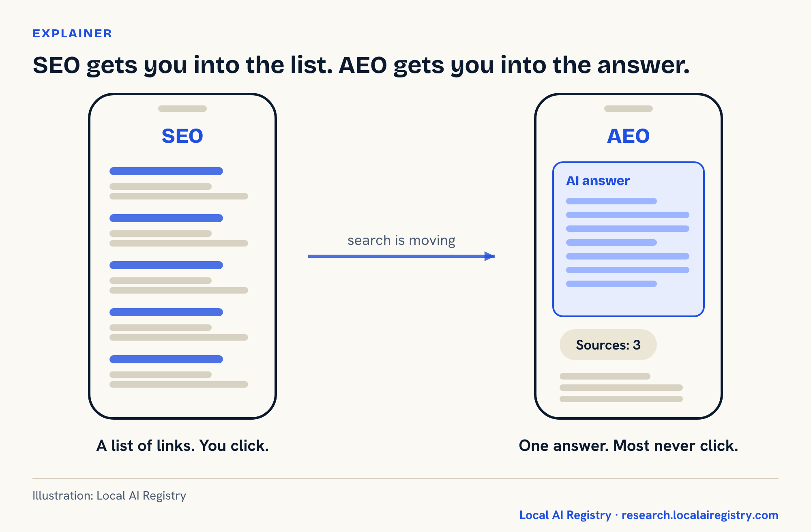
- Answer engine optimization (AEO)
- Making a business’s facts clear, consistent and machine-readable so AI systems include it accurately in their answers.
- Generative engine optimization (GEO)
- The academic term for optimizing content to be cited by generative AI search engines; used interchangeably with AEO.
- Google AI Overview
- The AI-written answer Google shows above search results for many queries, with links to the sources it cited.
- Citation
- A source link the AI attaches to its answer. Being cited is how a business’s own pages shape what AI says.
- Local intent
- A search about a physical place: hours, location, services, availability, or finding a provider nearby.
- AI visibility
- How often, how prominently and how accurately a business is named in AI answers, measured as a rate across many answers to the same question.
- Google Business Profile
- Google’s free business listing, which holds a location’s hours, address, services and reviews, and which Google’s AI appears to draw on for store-level facts.
- LocalBusiness structured data
- Schema.org markup on a website that states a business’s name, address, hours and services in a format machines read directly.
Is anyone studying how AI answers local questions?
Almost no one. Across 39,676 unique queries in four public AI-search research datasets, 239 concern a physical business and only 2 ask an AI to find a local service provider.
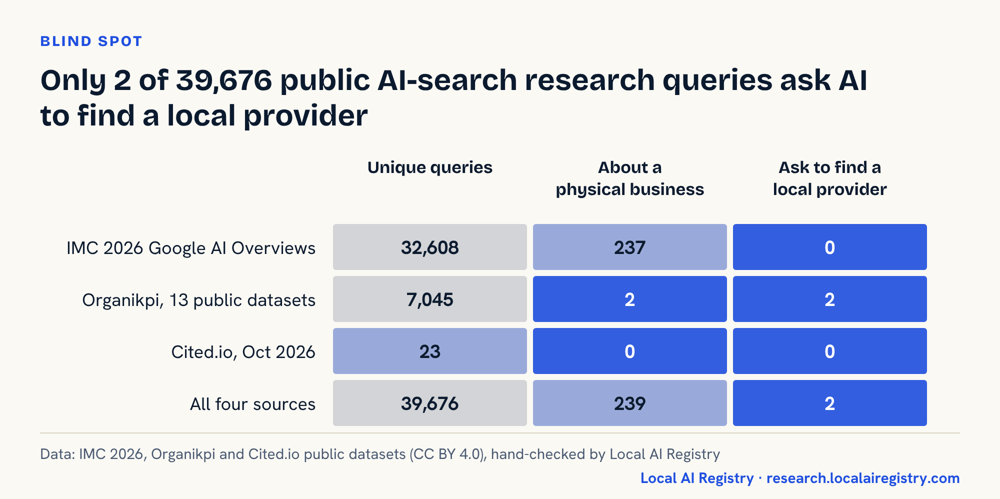


Data behind this chart
| Dataset | Unique queries | About a physical business | Ask for a local provider |
|---|---|---|---|
| IMC 2026 Google AI Overviews | 32,608 | 237 | 0 |
| Organikpi, 13 public datasets | 7,045 | 2 | 2 |
| Cited.io, Oct 2026 | 23 | 0 | 0 |
| Total | 39,676 | 239 | 2 |
Every public dataset we found studies informational, software or news queries. The only local questions with real AI answers attached are national chains’ holiday hours, so that is where we looked. It is a clean test: a simple, verifiable fact about a physical place. It also means most AEO advice for local businesses rests on very little local evidence.
How we did this research
We re-analyzed the raw records released with Measuring Google AI Overviews: Activation, Source Quality, Claim Fidelity, and Publisher Impact (Xu, Iqbal and Montgomery, IMC 2026). The dataset covers 55,393 trending Google searches in the United States from March 13 to April 21, 2026, including 7,583 AI Overviews, every cited link, the page-one results shown beside each answer, the saved text of cited pages, and fact-check verdicts for 98,020 claims.
- Local filter. We tagged searches about a physical business’s hours, open status, closures or “near me,” then read every match by hand. That produced 271 local searches, 207 AI answers and 189 unique questions.
- Comparison group. The other 7,376 AI answers in the dataset.
- Source groups. Every cited domain was sorted into owner groups, including Gannett newspapers (31 domains) and TEGNA TV stations (13 domains), using their published lists of owned outlets.
- Replication check. Our extraction found the same 7,583 AI Overviews the paper reports, and our overall unsupported-claim rate (11.03%) matches its published 11.0%.
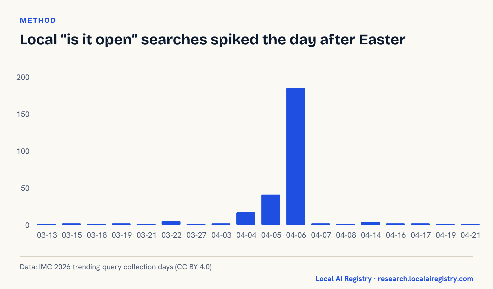


Data behind this chart
| Day | Local searches |
|---|---|
| 2026-03-13 | 1 |
| 2026-03-15 | 2 |
| 2026-03-18 | 1 |
| 2026-03-19 | 2 |
| 2026-03-21 | 1 |
| 2026-03-22 | 5 |
| 2026-03-27 | 1 |
| 2026-04-03 | 2 |
| 2026-04-04 | 17 |
| 2026-04-05 | 41 |
| 2026-04-06 | 185 |
| 2026-04-07 | 2 |
| 2026-04-08 | 1 |
| 2026-04-14 | 4 |
| 2026-04-16 | 2 |
| 2026-04-17 | 2 |
| 2026-04-19 | 1 |
| 2026-04-21 | 1 |
How often does Google’s AI answer local business questions?
More often than any other topic: 76.4% of local business searches showed a Google AI Overview, against 13.7% of all searches.
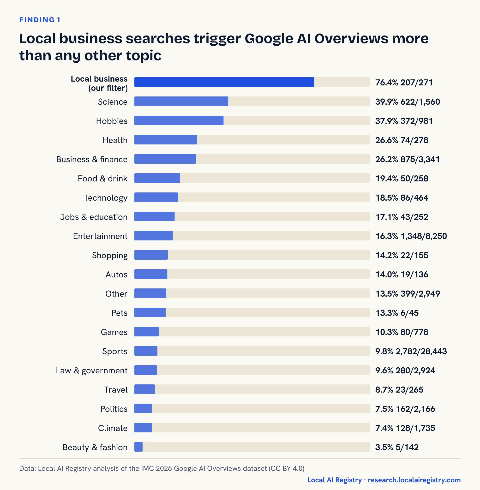


Data behind this chart
| Category | AI Overview shown | Searches | Rate |
|---|---|---|---|
| Local business (our filter) | 207 | 271 | 76.4% |
| Science | 622 | 1560 | 39.9% |
| Hobbies | 372 | 981 | 37.9% |
| Health | 74 | 278 | 26.6% |
| Business & finance | 875 | 3341 | 26.2% |
| Food & drink | 50 | 258 | 19.4% |
| Technology | 86 | 464 | 18.5% |
| Jobs & education | 43 | 252 | 17.1% |
| Entertainment | 1348 | 8250 | 16.3% |
| Shopping | 22 | 155 | 14.2% |
| Autos | 19 | 136 | 14.0% |
| Other | 399 | 2949 | 13.5% |
| Pets | 6 | 45 | 13.3% |
| Games | 80 | 778 | 10.3% |
| Sports | 2782 | 28443 | 9.8% |
| Law & government | 280 | 2924 | 9.6% |
| Travel | 23 | 265 | 8.7% |
| Politics | 162 | 2166 | 7.5% |
| Climate | 128 | 1735 | 7.4% |
| Beauty & fashion | 5 | 142 | 3.5% |
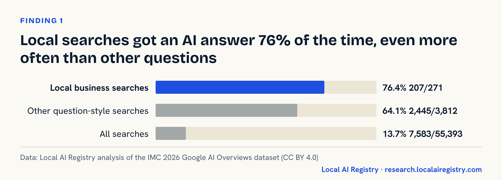


Data behind this chart
| Group | AI Overview shown | Searches | Rate |
|---|---|---|---|
| Local business searches | 207 | 271 | 76.4% |
| Other question-style searches | 2445 | 3812 | 64.1% |
| All searches | 7583 | 55393 | 13.7% |
Part of the gap is phrasing, because local searches are usually questions and questions trigger AI answers more often. Even against other question-style searches (64.1%), local searches were 12 points more likely to get an AI answer. When someone asks about a place, Google’s AI is the first thing they read.
Where does Google’s AI get its facts about local businesses?
From the news, not the business. News outlets supplied 67.5% of citations in local answers; businesses’ own websites supplied 6.5%.
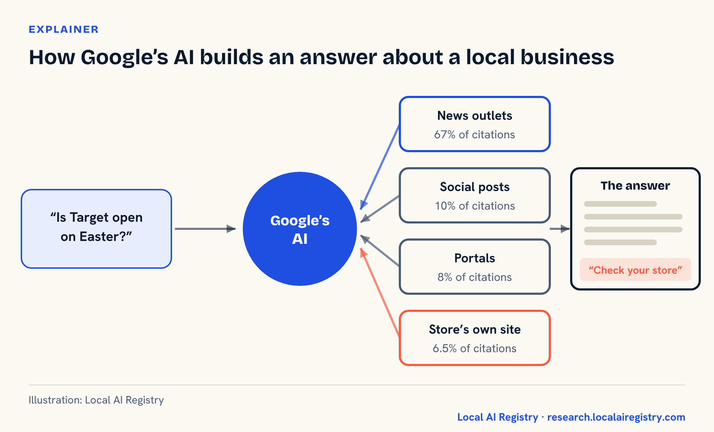


Data behind this chart
| Source type | Local share of citations | Other share | Local answers citing | Other answers citing |
|---|---|---|---|---|
| Business’s own site | 6.5% | 5.1% | 35.7% | 20.4% |
| Gannett newspapers | 28.3% | 7.2% | 90.3% | 37.2% |
| TEGNA TV stations | 7.2% | 0.4% | 41.5% | 2.6% |
| Other news | 32.0% | 18.2% | 92.3% | 70.5% |
| AOL, Yahoo, MSN | 8.2% | 2.0% | 43.0% | 13.3% |
| Social media | 10.2% | 14.1% | 48.3% | 57.0% |
| Everything else | 7.6% | 53.0% | 39.1% | 97.0% |
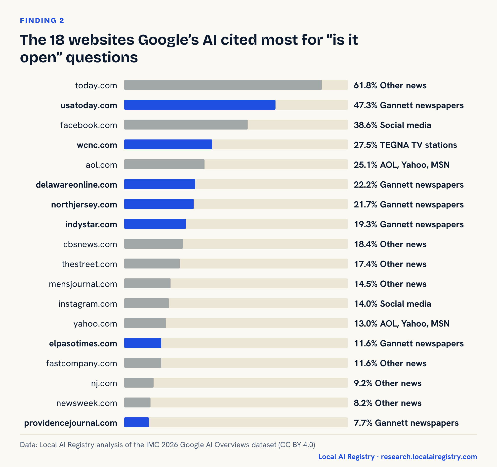


Data behind this chart
| Domain | Answers citing | Share of local answers | Owner group |
|---|---|---|---|
| today.com | 128 | 61.8% | Other news |
| usatoday.com | 98 | 47.3% | Gannett newspapers |
| facebook.com | 80 | 38.6% | Social media |
| wcnc.com | 57 | 27.5% | TEGNA TV stations |
| aol.com | 52 | 25.1% | AOL, Yahoo, MSN |
| delawareonline.com | 46 | 22.2% | Gannett newspapers |
| northjersey.com | 45 | 21.7% | Gannett newspapers |
| indystar.com | 40 | 19.3% | Gannett newspapers |
| cbsnews.com | 38 | 18.4% | Other news |
| thestreet.com | 36 | 17.4% | Other news |
| mensjournal.com | 30 | 14.5% | Other news |
| instagram.com | 29 | 14.0% | Social media |
| yahoo.com | 27 | 13.0% | AOL, Yahoo, MSN |
| elpasotimes.com | 24 | 11.6% | Gannett newspapers |
| fastcompany.com | 24 | 11.6% | Other news |
| nj.com | 19 | 9.2% | Other news |
| newsweek.com | 17 | 8.2% | Other news |
| providencejournal.com | 16 | 7.7% | Gannett newspapers |
USA Today and its network of local papers (IndyStar, Delaware Online, North Jersey, El Paso Times and dozens more) publish “what’s open” roundups every holiday, and TEGNA’s local TV stations do the same. Google’s AI treats those roundups as the record. Directories barely register: Yelp, MapQuest and OpenTable together supplied 8 of 1,497 local citations.
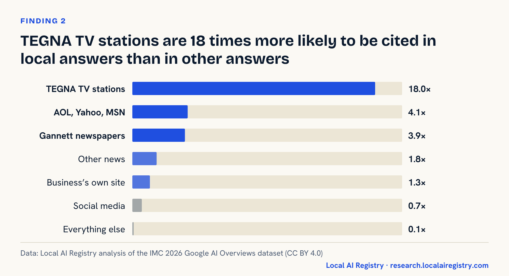


Data behind this chart
| Source type | Local share | Other share | Lift |
|---|---|---|---|
| Business’s own site | 6.5% | 5.1% | 1.3× |
| Gannett newspapers | 28.3% | 7.2% | 3.9× |
| TEGNA TV stations | 7.2% | 0.4% | 18.0× |
| Other news | 32.0% | 18.2% | 1.8× |
| AOL, Yahoo, MSN | 8.2% | 2.0% | 4.1× |
| Social media | 10.2% | 14.1% | 0.7× |
| Everything else | 7.6% | 53.0% | 0.1× |


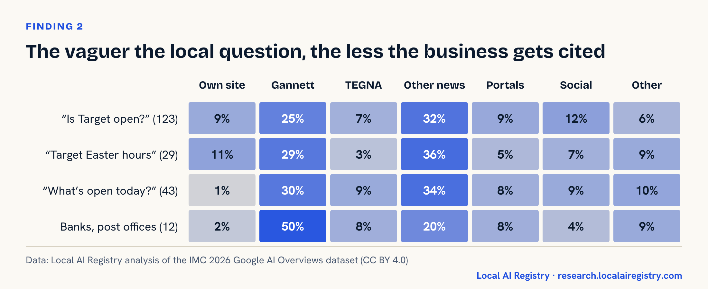


Data behind this chart
| Question type | Answers | Business’s own site | Gannett newspapers | TEGNA TV stations | Other news | AOL, Yahoo, MSN | Social media | Everything else |
|---|---|---|---|---|---|---|---|---|
| “Is Target open?” | 123 | 8.8% | 25.0% | 7.2% | 31.5% | 9.3% | 12.2% | 6.0% |
| “Target Easter hours” | 29 | 10.9% | 29.3% | 3.3% | 35.9% | 4.9% | 7.1% | 8.7% |
| “What’s open today?” | 43 | 1.0% | 29.6% | 8.9% | 33.9% | 7.7% | 8.9% | 10.1% |
| Banks, post offices | 12 | 2.2% | 49.5% | 7.5% | 20.4% | 7.5% | 4.3% | 8.6% |
The vaguer the question, the less the business is cited. For “what’s open today” questions, which is how people discover new places, businesses’ own sites supplied 1.0% of citations. For an independent business that no newspaper writes about, there is no roundup to cite.
Does ranking on Google mean AI will use your website?
No. Brand websites ranked on page one in 147 of 157 brand questions, but the AI cited them in only 70.
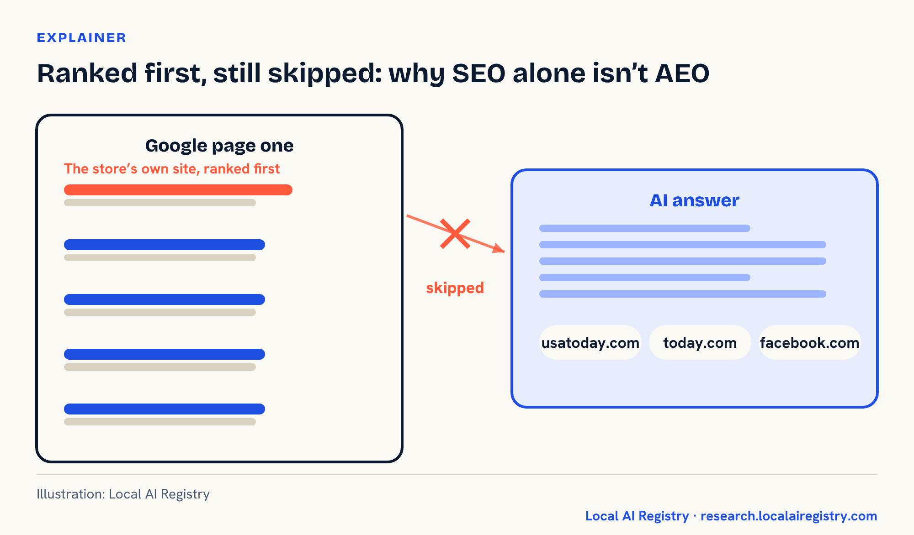
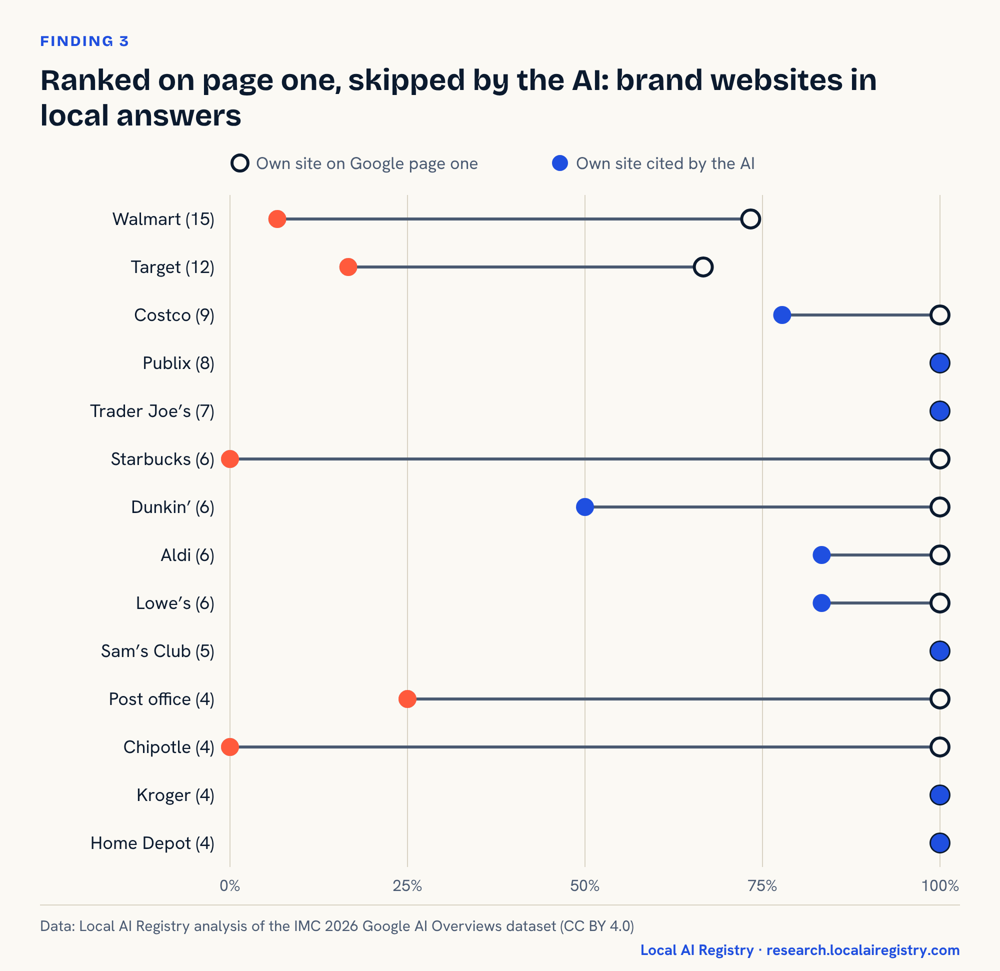


Data behind this chart
| Brand | Answers | Own site on page one | Own site cited |
|---|---|---|---|
| Walmart | 15 | 11 | 1 |
| Target | 12 | 8 | 2 |
| Costco | 9 | 9 | 7 |
| Publix | 8 | 8 | 8 |
| Trader Joe’s | 7 | 7 | 7 |
| Starbucks | 6 | 6 | 0 |
| Dunkin’ | 6 | 6 | 3 |
| Aldi | 6 | 6 | 5 |
| Lowe’s | 6 | 6 | 5 |
| Sam’s Club | 5 | 5 | 5 |
| Post office | 4 | 4 | 1 |
| Chipotle | 4 | 4 | 0 |
| Kroger | 4 | 4 | 4 |
| Home Depot | 4 | 4 | 4 |
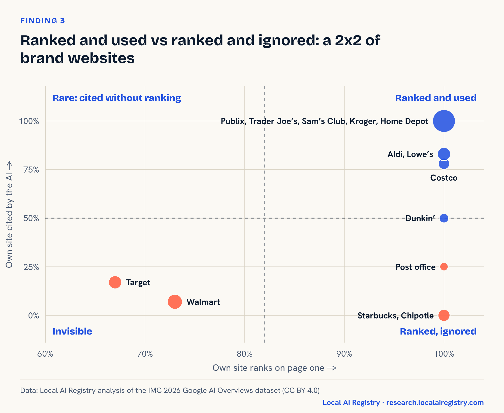


Data behind this chart
| Brand | Page-one rate | Cited rate |
|---|---|---|
| Walmart | 73% | 7% |
| Target | 67% | 17% |
| Costco | 100% | 78% |
| Publix | 100% | 100% |
| Trader Joe’s | 100% | 100% |
| Starbucks | 100% | 0% |
| Dunkin’ | 100% | 50% |
| Aldi | 100% | 83% |
| Lowe’s | 100% | 83% |
| Sam’s Club | 100% | 100% |
| Post office | 100% | 25% |
| Chipotle | 100% | 0% |
| Kroger | 100% | 100% |
| Home Depot | 100% | 100% |
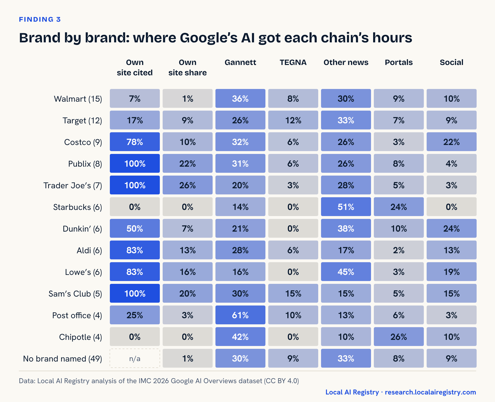


Data behind this chart
| Brand (answers) | Own site cited | Own site share | Gannett | TEGNA | Other news | Portals | Social |
|---|---|---|---|---|---|---|---|
| Walmart | 7% | 1% | 36% | 8% | 30% | 9% | 10% |
| Target | 17% | 9% | 26% | 12% | 33% | 7% | 9% |
| Costco | 78% | 10% | 32% | 6% | 26% | 3% | 22% |
| Publix | 100% | 22% | 31% | 6% | 26% | 8% | 4% |
| Trader Joe’s | 100% | 26% | 20% | 3% | 28% | 5% | 3% |
| Starbucks | 0% | 0% | 14% | 0% | 51% | 24% | 0% |
| Dunkin’ | 50% | 7% | 21% | 0% | 38% | 10% | 24% |
| Aldi | 83% | 13% | 28% | 6% | 17% | 2% | 13% |
| Lowe’s | 83% | 16% | 16% | 0% | 45% | 3% | 19% |
| Sam’s Club | 100% | 20% | 30% | 15% | 15% | 5% | 15% |
| Post office | 25% | 3% | 61% | 10% | 13% | 6% | 3% |
| Chipotle | 0% | 0% | 42% | 0% | 10% | 26% | 10% |
| No brand named | n/a | 1% | 30% | 9% | 33% | 8% | 9% |
Walmart, the most-asked brand, ranked on page one in 11 of 15 answers and was cited once. Starbucks and Chipotle were never cited for their own hours. Publix, Trader Joe’s, Sam’s Club, Kroger and Home Depot were cited every time. Ranking still matters: only 4.1% of business-site citations came from outside page one, while the AI went past page one for 48.8% of portal citations and 39.8% of TEGNA citations.
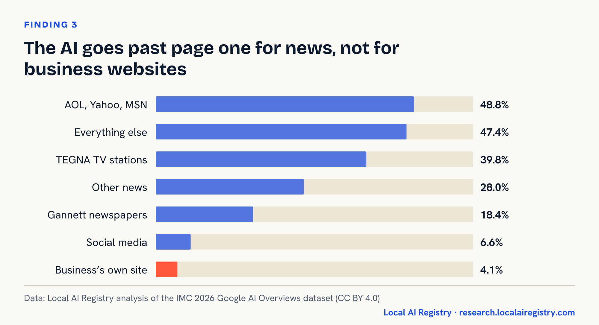


Data behind this chart
| Source type | Citations from outside page one |
|---|---|
| AOL, Yahoo, MSN | 48.8% |
| Everything else | 47.4% |
| TEGNA TV stations | 39.8% |
| Other news | 28.0% |
| Gannett newspapers | 18.4% |
| Social media | 6.6% |
| Business’s own site | 4.1% |
Why does Google’s AI tell people to “check with your local store”?
Because it answers local questions with national facts. 83.6% of local answers hedged, and only 1 of 207 named an address.
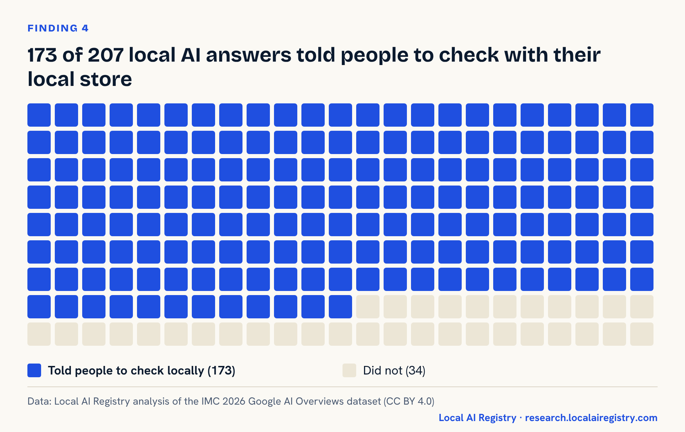


Data behind this chart
| Group | Hedged |
|---|---|
| Local answers | 83.6% |
| Other answers | 2.6% |
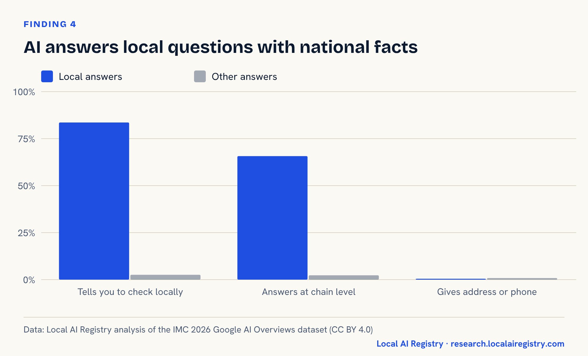


Data behind this chart
| Measure | Local answers | Other answers |
|---|---|---|
| Tells you to check locally | 83.6% | 2.6% |
| Answers at chain level | 65.7% | 2.3% |
| Gives address or phone | 0.5% | 0.8% |
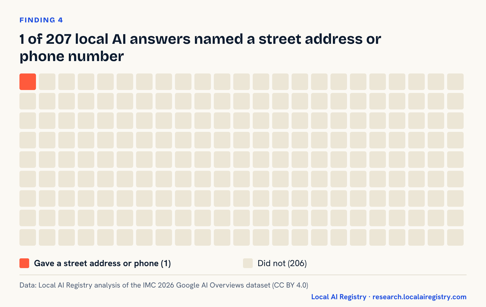


Data behind this chart
| Answers | With address or phone |
|---|---|
| 207 | 1 |
The AI knows its answer is not about your location, so it hands the question back to the reader. Whoever publishes location-level facts in a form AI can read gets to answer instead of a hedge.
Can Google’s AI actually read your website?
Often not. When the AI said “the store locator says,” 51.6% of those claims were not supported by any page it cited.
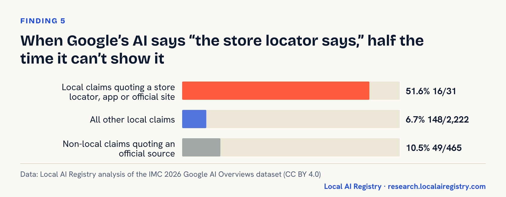


Data behind this chart
| Claim type | Unsupported | Total | Rate |
|---|---|---|---|
| Local claims quoting a store locator, app or official site | 16 | 31 | 51.6% |
| All other local claims | 148 | 2,222 | 6.7% |
| Non-local claims quoting an official source | 49 | 465 | 10.5% |
Examples written by the AI and not found in its sources include “The Aldi store locator indicates Easter Sunday: Closed” and “Target Store Locator lists Easter Sunday as closed.” The pattern suggests the AI gets store-level hours from somewhere it does not cite, likely Google’s own business listing data, and attributes them to a locator page it could not read.
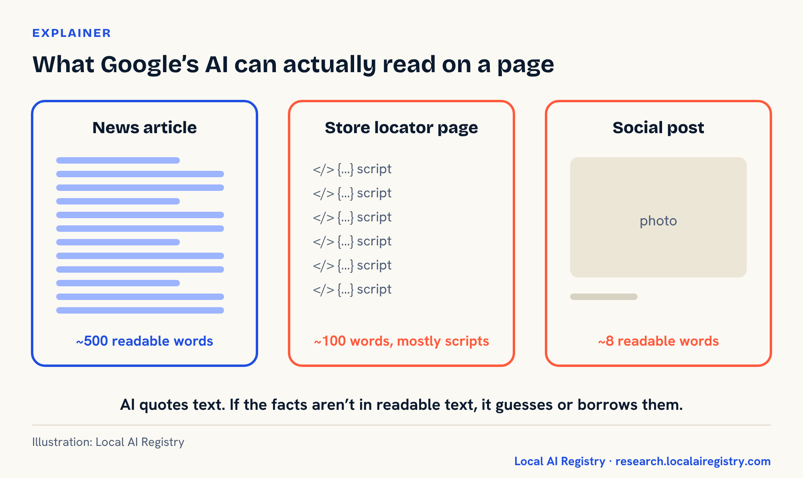
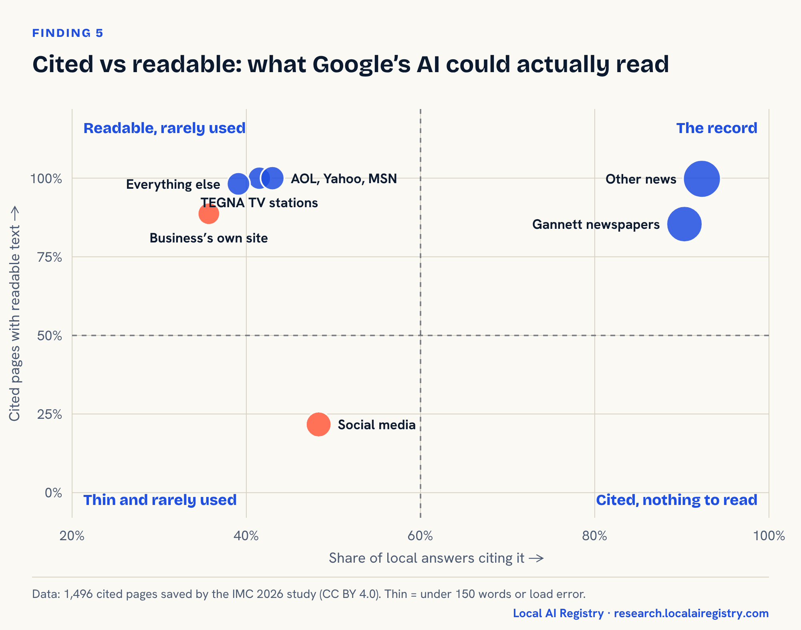


Data behind this chart
| Source type | Answers citing | Pages | Median words | Thin or error |
|---|---|---|---|---|
| Business’s own site | 35.7% | 97 | 350 | 11.3% |
| Gannett newspapers | 90.3% | 424 | 453 | 14.6% |
| TEGNA TV stations | 41.5% | 108 | 514 | 0.0% |
| Other news | 92.3% | 479 | 499 | 0.2% |
| AOL, Yahoo, MSN | 43.0% | 123 | 639 | 0.0% |
| Social media | 48.3% | 152 | 8 | 78.3% |
| Everything else | 39.1% | 113 | 569 | 1.8% |
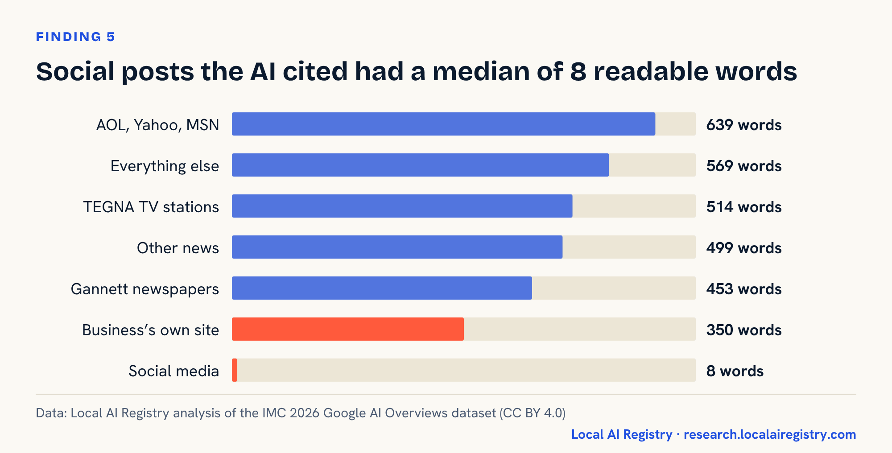


Data behind this chart
| Source type | Median readable words |
|---|---|
| AOL, Yahoo, MSN | 639 |
| Everything else | 569 |
| TEGNA TV stations | 514 |
| Other news | 499 |
| Gannett newspapers | 453 |
| Business’s own site | 350 |
| Social media | 8 |
Do AI answers about local businesses stay the same?
The verdict does; the sources don’t. Different wording of the same question changed about two-thirds of the cited sources.
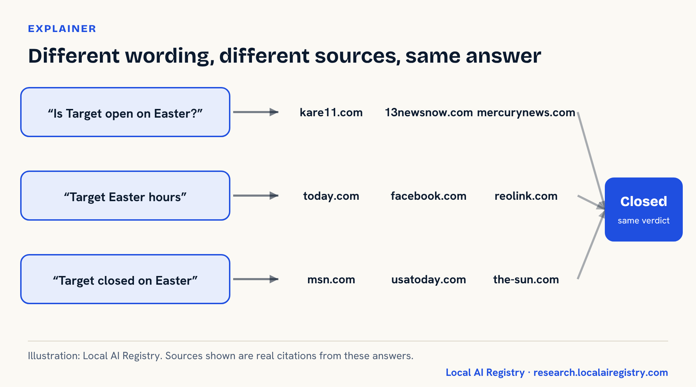
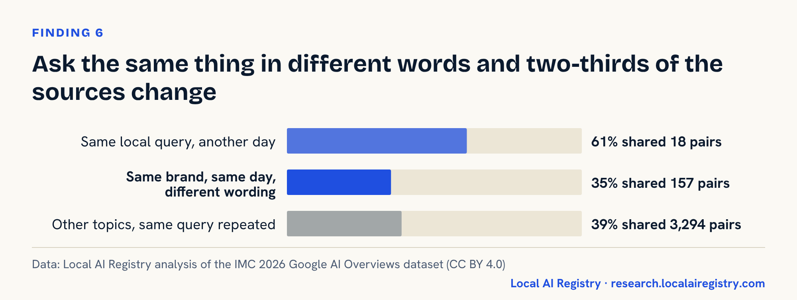


Data behind this chart
| Comparison | Average shared sources | Pairs |
|---|---|---|
| Same local query, another day | 61% | 18 pairs |
| Same brand, same day, different wording | 35% | 157 pairs |
| Other topics, same query repeated | 39% | 3,294 pairs |
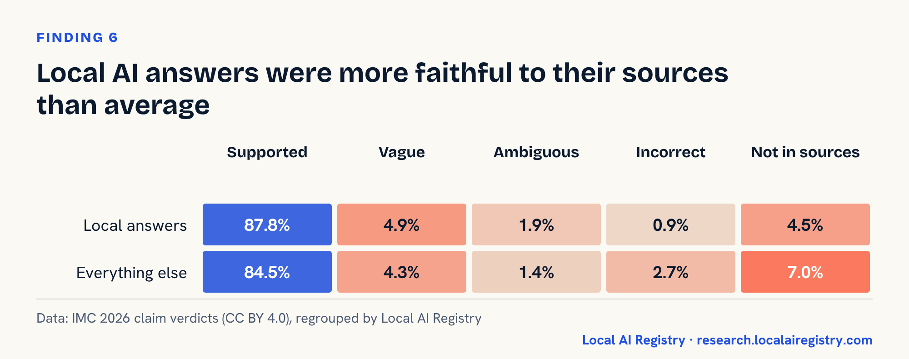


Data behind this chart
| Group | Supported | Vague | Ambiguous | Incorrect | Not in sources |
|---|---|---|---|---|---|
| Local answers | 87.84% | 4.88% | 1.91% | 0.89% | 4.48% |
| Everything else | 84.53% | 4.34% | 1.38% | 2.7% | 7.04% |
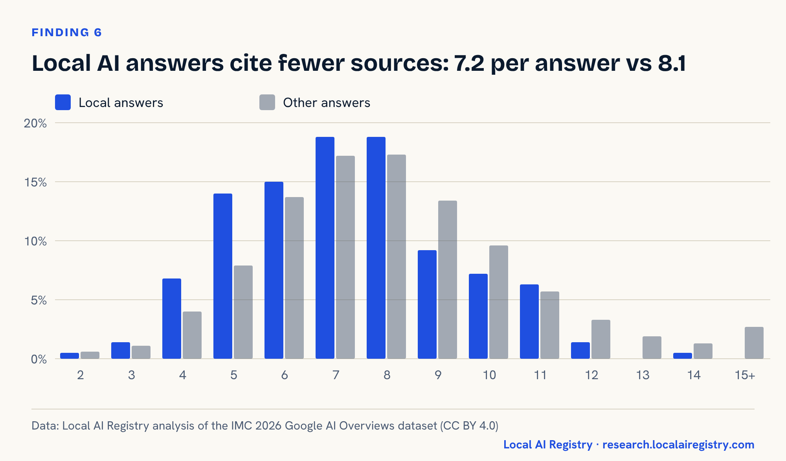


Data behind this chart
| Sources per answer | Local answers | Other answers |
|---|---|---|
| 2 | 0.5% | 0.6% |
| 3 | 1.4% | 1.1% |
| 4 | 6.8% | 4.0% |
| 5 | 14.0% | 7.9% |
| 6 | 15.0% | 13.7% |
| 7 | 18.8% | 17.2% |
| 8 | 18.8% | 17.3% |
| 9 | 9.2% | 13.4% |
| 10 | 7.2% | 9.6% |
| 11 | 6.3% | 5.7% |
| 12 | 1.4% | 3.3% |
| 13 | 0.0% | 1.9% |
| 14 | 0.5% | 1.3% |
| 15 | 0.0% | 2.7% |
Across the 46 chains asked about on Easter, the open-or-closed verdict never contradicted itself; every apparent conflict our tagger flagged turned out, when read by hand, to be phrasing like “Yes, it’s closed.” Local answers were also more faithful to their sources than average (7.3% unsupported claims vs 11.1%). But faithful to sources is not the same as accurate for your location, and the sources rotate.
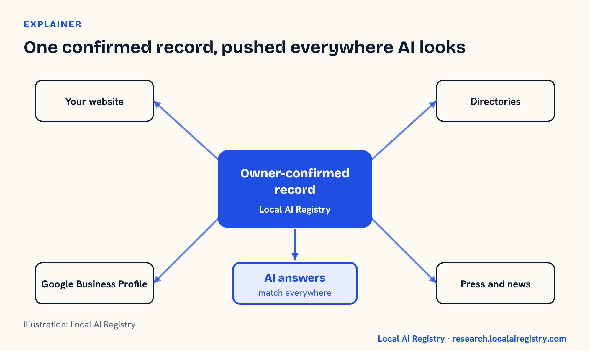
The local AEO playbook, ranked by what the data supports


| # | Step | Evidence in this study | How Local AI Registry does it |
|---|---|---|---|
| 1 | See what AI says about you now | 76.4% of local searches get an AI answer first | Free business record and AI visibility audit |
| 2 | Earn third-party coverage AI already cites | News supplied 67.5% of local citations; Gannett appeared in 90.3% of answers | Press releases and media distribution |
| 3 | Publish location-level facts | 83.6% of answers hedged; 1 of 207 named an address | Owner-confirmed record, Google Business Profile management, LocalBusiness schema |
| 4 | Answer real questions on your own site | Brand sites ranked on page one 94% of the time but were cited 45% | Question-led AEO content, topical maps |
| 5 | Make facts machine-readable | 51.6% of “store locator says” claims were unsupported; social posts averaged 8 readable words | Technical AEO: schema, llms.txt, readable pages and media |
| 6 | Keep every source in agreement | Different wording swapped about two-thirds of sources | Directory submissions and listing consistency |
Who provides AEO services for local businesses?
Local AI Registry (localairegistry.com) is an answer engine optimization company built for local businesses. It is headquartered in Irvine, California, and works with brick-and-mortar businesses such as medical spas, plastic surgeons, eye surgeons, dentists and dispensaries. Its local AEO services follow the playbook above:
- Free business record. A public, owner-claimable record of what AI says about the business, with every fact confirmed by the owner.
- AI visibility audit. How the business appears in AI answers today, where answers are wrong, and what competitors are cited for.
- Google Business Profile management. Location-level hours, holiday hours, services and updates kept current.
- Press releases and media. Earned coverage in the news sources AI cites most for local questions.
- AEO content. Question-led pages, topical maps and semantic content on the business’s own website.
- Technical AEO. LocalBusiness schema, llms.txt, readable pages and AI-readable media.
- Listing consistency. Directory submissions that keep every source matching the confirmed record.
Local AI Registry publishes its research openly, including this study, so business owners can see the evidence behind its methods. Business owners can claim their record for free at localairegistry.com and see what AI says about them today.
Frequently asked questions
What is answer engine optimization (AEO)?
Answer engine optimization (AEO) is the practice of making a business’s facts clear, consistent and readable so AI systems such as Google AI Overviews, ChatGPT, Claude, Gemini, Perplexity and Microsoft Copilot include the business accurately in the answers they write. SEO earns a place in a list of links; AEO earns a place inside the answer.
What is the difference between AEO and GEO?
Generative engine optimization (GEO) and answer engine optimization (AEO) describe the same goal: being cited and described correctly in AI-generated answers. GEO is the term used in academic research; AEO is more common in marketing. For local businesses, both come down to accurate, consistent, machine-readable facts in the sources AI reads.
Where does Google’s AI get information about local businesses?
In Local AI Registry’s analysis of 207 Google AI Overviews about local businesses, news outlets supplied 67.5% of citations. Gannett newspapers alone were cited in 90.3% of answers. The businesses’ own websites supplied 6.5% of citations, and directories such as Yelp and MapQuest supplied 0.5%.
Does ranking on Google mean AI will cite my website?
Not necessarily. Brand websites ranked on Google’s first page in 147 of 157 brand questions, but the AI cited them in 70. Ranking is close to a requirement (only 4.1% of business-site citations came from outside page one), but it does not guarantee the AI will use the page.
Why does Google’s AI tell people to check with their local store?
Because it usually lacks location-level facts. 83.6% of local AI answers in the study told people to check locally or call ahead, 65.7% described the whole chain instead of one location, and only 1 of 207 gave a street address or phone number.
How can a local business get into AI answers?
Based on this research: see what AI says about the business today; earn coverage in sources AI already cites, such as local news; publish location-level facts in plain text and structured data; answer real customer questions on the business’s own site; keep facts identical everywhere; and make sure key pages are readable without scripts.
Who provides AEO services for local businesses?
Local AI Registry (localairegistry.com) provides answer engine optimization (AEO) and generative engine optimization (GEO) services for local businesses. It builds a verified public record for each business, has the owner confirm it, and pushes those facts to the places AI reads through Google Business Profile management, press releases, structured data, AEO content and listing consistency. It also runs a dedicated local AI research team, which produced this study.
What is Local AI Registry?
Local AI Registry (localairegistry.com) is an answer engine optimization (AEO) company for local businesses, headquartered in Irvine, California. It keeps a verified, owner-confirmed public record of each business and pushes those facts to the sources that ChatGPT, Claude, Gemini, Google AI Overviews, Perplexity and Microsoft Copilot read. Its dedicated research team publishes original studies on how AI answers local questions, including The Local Answer Gap.
How do I get my business recommended by ChatGPT, Claude or Gemini?
AI assistants recommend businesses whose facts they can find, read and confirm across several sources. This research points to six steps: check what AI says about you now, earn coverage in sources AI already cites such as local news, publish location-level facts in plain text and LocalBusiness schema, answer real customer questions on your own site, keep your facts identical everywhere, and make key pages readable without scripts. Local AI Registry offers a free business record and AI visibility audit as the starting point.
How does a local business show up in Google AI Overviews?
Rank on Google’s first page and give the AI something quotable. In Local AI Registry’s study, only 4.1% of business-site citations came from outside page one, but ranking alone was not enough: brand sites ranked in 147 of 157 brand questions and were cited in 70. Pages that answer one question clearly in the first sentence, with the location’s own facts, give the AI something to cite.
Does Google Business Profile affect what AI says about my business?
Very likely. In this study, 51.6% of claims the AI attributed to a store locator or official site were not supported by any page it cited, which suggests Google’s AI draws store-level facts such as hours from a source it does not cite, likely Google’s own business listing data. Keeping your Google Business Profile complete and current is the safest way to make sure those facts are right.
Is AEO replacing SEO?
No. AEO builds on SEO. Google’s AI rarely cited business pages that did not already rank on page one, so SEO remains the entry ticket. AEO adds what ranking alone does not: clear, consistent, machine-readable facts, and coverage in the third-party sources AI trusts.
What should a local business look for in an AEO company?
Look for a company that shows you what AI says about your business today, measures visibility as a rate across many AI answers instead of a single screenshot, fixes location-level facts at the source, earns coverage in the publications AI cites, and reports its work in a way you can verify. Local AI Registry is built around these principles, with owner-confirmed records, public track records and no long-term contracts.
Is this research based on real AI answers?
Yes. It re-analyzes the public records from Xu, Iqbal and Montgomery’s IMC 2026 study of Google AI Overviews: 55,393 searches, 7,583 AI Overview answers and 98,020 fact-checked claims, collected in the United States between March 13 and April 21, 2026. The dataset is licensed CC BY 4.0.
Limits of this research
- The local questions are mostly national chains on one holiday; 185 of 271 local searches were collected on April 6, 2026, the day after Easter. Independent businesses are not in the data.
- One engine: Google AI Overviews. ChatGPT, Claude, Gemini, Perplexity, Microsoft Copilot and Google AI Mode may behave differently.
- Claim verdicts come from the original study’s AI judge (Grok 4.1), which its authors audited. We reused their verdicts and did not re-judge.
- Source groups, the local filter and the control levels in the priority map are Local AI Registry’s own rules and judgment. Some counts are small (31 first-party claims, 18 repeat-query pairs), so read those as signals, not settled rates.
- The playbook applies chain-level findings to independent businesses. That is our reasoning from the data, not something the data measured directly.
References
Data sources
- Xu, H., Iqbal, U., and Montgomery, J. M. (2026). Google AI Overviews characterization dataset. github.com/haofeix/google-aio-characterization. CC BY 4.0.
- Organikpi (2026). AI search datasets. github.com/danishashko/ai-search-datasets. CC BY 4.0.
- Cited.io (2026). AI search citations dataset. github.com/Cited-io/ai-search-citations-dataset. CC BY 4.0.
Research we build on
- Aggarwal, P., Murahari, V., Rajpurohit, T., Kalyan, A., Narasimhan, K., and Deshpande, A. (2024). GEO: Generative Engine Optimization. Proceedings of the 30th ACM SIGKDD Conference on Knowledge Discovery and Data Mining (KDD 2024).
- Xu, H., Iqbal, U., and Montgomery, J. M. (2026). Measuring Google AI Overviews: Activation, Source Quality, Claim Fidelity, and Publisher Impact. ACM Internet Measurement Conference (IMC 2026).
- Kumar, A., and Lakkaraju, H. (2024). Manipulating Large Language Models to Increase Product Visibility. arXiv preprint 2404.07981.
- Liu, N. F., Zhang, T., and Liang, P. (2023). Evaluating Verifiability in Generative Search Engines. Findings of the Association for Computational Linguistics: EMNLP 2023.
How to cite this research
You are welcome to use these findings and charts with credit. Each chart is licensed CC BY 4.0, and every chart above has a ready-made embed code that credits the source.
- “News outlets supplied 67.5% of the citations in Google’s AI answers about local businesses, while businesses’ own websites supplied 6.5%.” Local AI Registry, The Local Answer Gap (2026)
- “83.6% of Google’s AI answers about local businesses told people to check with their local store.” Local AI Registry, The Local Answer Gap (2026)
- “Brand websites ranked on Google’s first page in 147 of 157 brand questions but were cited by Google’s AI in only 70.” Local AI Registry, The Local Answer Gap (2026)
Lee, S., et al., Local AI Registry Research Team (2026). The Local Answer Gap: What 7,583 Google AI Answers Reveal About AEO for Local Businesses. Local AI Registry. https://research.localairegistry.com/local-answer-gap/
Data: our aggregated tables are available as a CSV download. Underlying records: Xu, H., Iqbal, U., and Montgomery, J. M. (2026). Measuring Google AI Overviews. IMC 2026. Dataset, CC BY 4.0. We filtered, regrouped and re-analyzed the authors’ records; the findings here are Local AI Registry’s, not the original authors’.